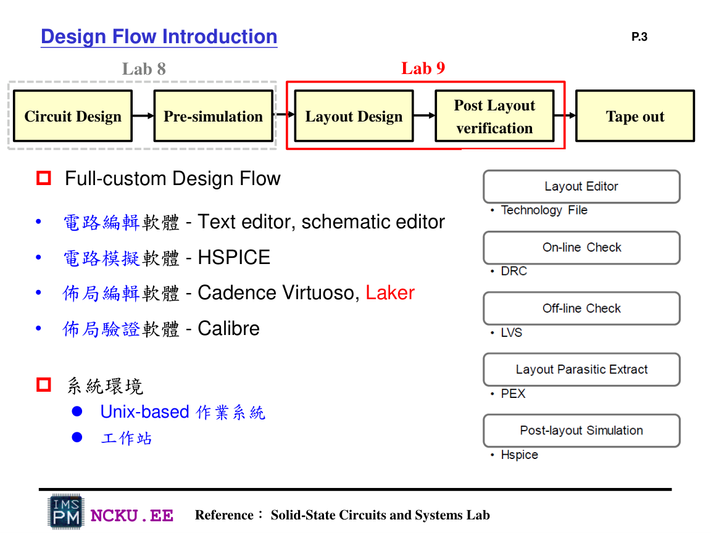
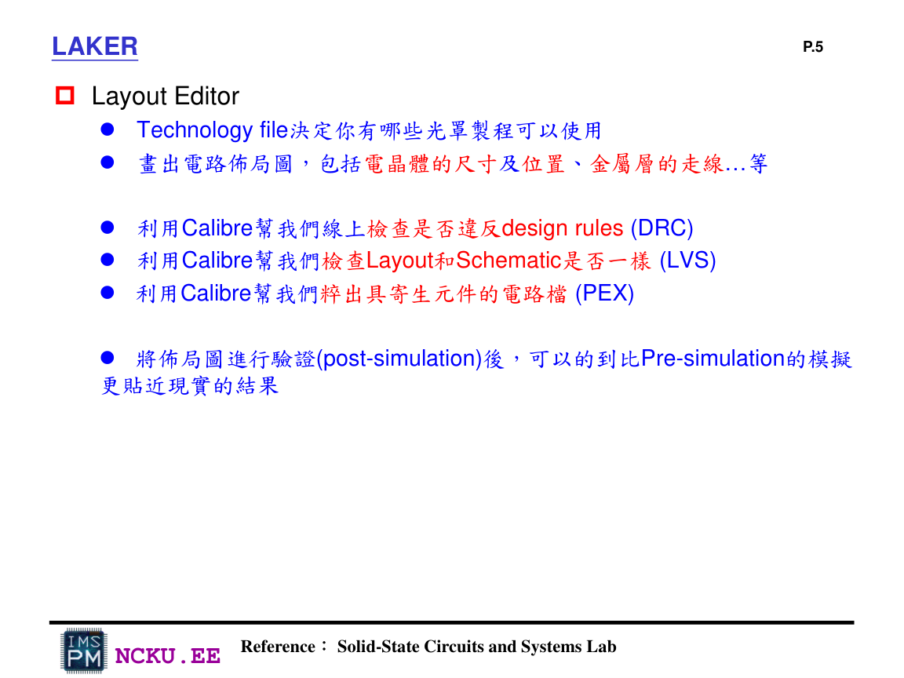
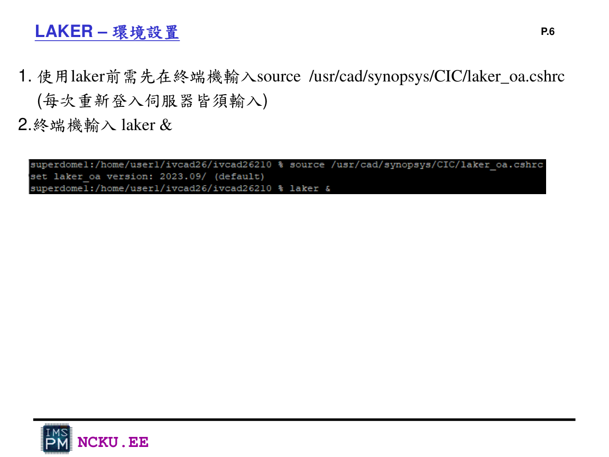
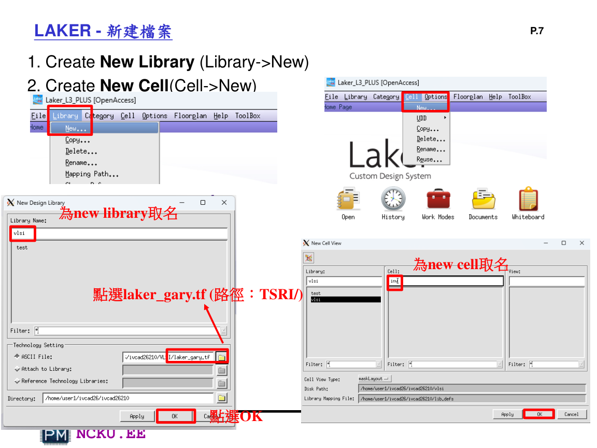
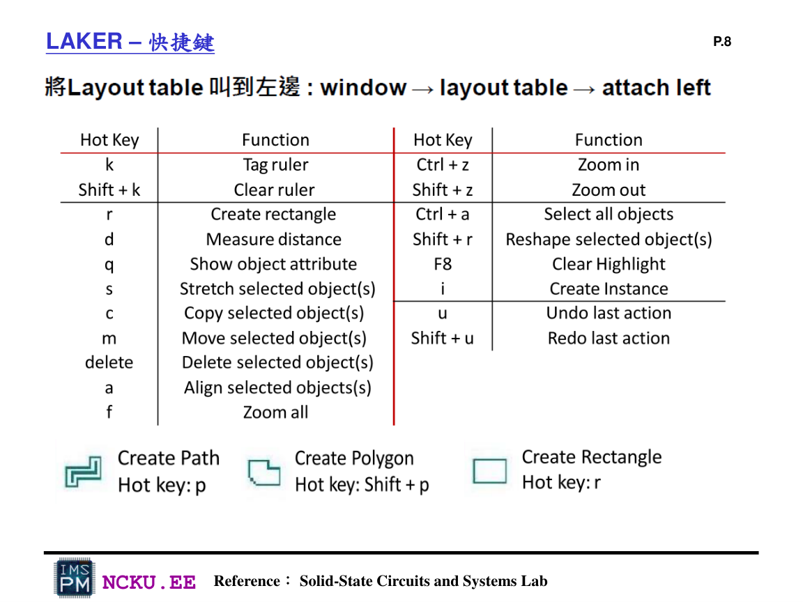

工具軟體與使用環境
Lab9 的主軸是 layout 與 post-layout verification，所以工具比 Lab8 多。Lab8 主要是 HSPICE / WaveView；Lab9 還需要 Laker 與 Calibre。
完整工具列表
Unix-based 工作站
所有 EDA 工具通常在學校工作站上執行。建議所有 Lab9 檔案放在同一個資料夾，避免 rule path、netlist path、PEX include path 混亂。
Laker
layout editor，用來畫 NAND 與 NOR 版圖、建立 library/cell、放置圖層、畫 pin text。
Calibre DRC / LVS / PEX
DRC 檢查 layout 幾何規則，LVS 比對 layout 與 netlist，PEX 抽出寄生 RC。
HSPICE
pre-sim 沿用 Lab8，post-sim 則 include PEX 產生的 netlist。
WaveView
讀取 HSPICE transient output，例如 .tr0，觀察 NAND / NOR 的輸入輸出波形。
截圖與 PDF / ZIP 工具
報告圖片不可用手機拍照，需電腦截圖；最後轉 PDF 並壓縮所有結果檔。
Laker 環境設定
每次重新登入伺服器後，先 source Laker 環境，再啟動 Laker。
source /usr/cad/synopsys/CIC/laker_oa.cshrc
laker &
Lab9_Laker p.3：Lab9 位於 full-custom design flow 的 Layout Design 與 Post Layout verification 階段

Lab9_Laker p.5：Laker 用於畫 layout；Calibre 用於 DRC、LVS、PEX；post-sim 比 pre-sim 更接近真實結果

Lab9_Laker p.6：Laker 啟動指令 source laker_oa.cshrc 與 laker &
建立 Library / Cell
進入 Laker 後，先建立 Library，再建立 NAND 或 NOR 的 Cell。Technology file 請選擇 TSRI 內的 laker_gary.tf。

Lab9_Laker p.7：Create New Library / Create New Cell，並選擇 laker_gary.tf
常用快捷鍵

Lab9_Laker p.8：Laker 快捷鍵，包含 r 建立矩形、d 量測距離、p 建立 path、i 建立 instance、L 建立 text